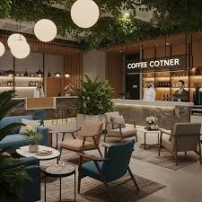
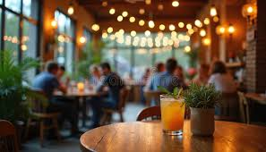
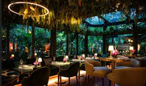
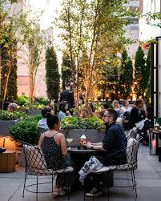
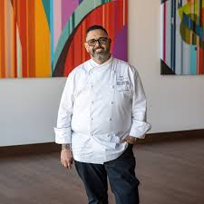
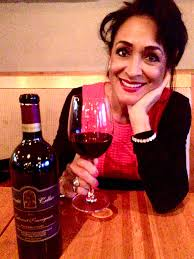

Cozy Corner
Soft lighting and intimate seating perfect for two.
Our Story
Urban Taste was born from a love of late-night conversations, shared plates, and the energy of the city.
What started as a small pop-up kitchen quickly became a neighborhood favorite. Our mission has always been to create a space where everyone feels welcome, whether you're celebrating a milestone or dropping in after work.
We focus on simple, high-quality ingredients, thoughtful cooking techniques, and an experience that feels both refined and relaxed.

Dining Spaces
From cozy corners for date nights to bright communal tables for celebrations, Urban Taste is designed for moments worth remembering.

Soft lighting and intimate seating perfect for two.

A lively space where the energy of the city meets great food.

An open-air terrace for golden hour drinks and dinners.
Our Values
We greet every guest with warmth and treat every table like family.
We bring the care of slow cooking to the pace of city life.
We prioritize responsible sourcing, minimal waste, and seasonal menus.
Meet the Team

Head Chef & Co-Founder
Brings global flavors to familiar dishes with a focus on technique and balance.
Operations Manager
Ensures every service runs smoothly, from reservations to the final dessert.

Beverage Director
Curates our wine, cocktail, and zero-proof lists to match every mood and meal.